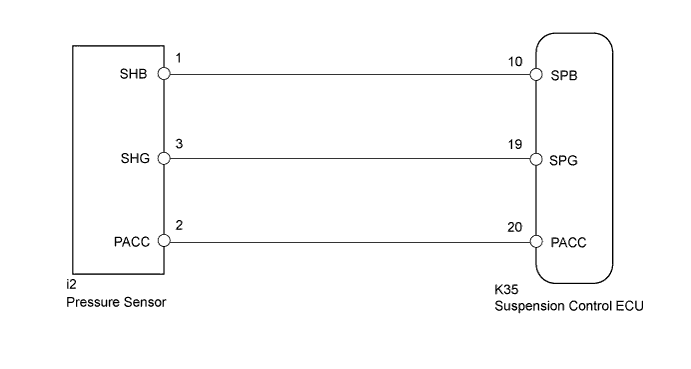
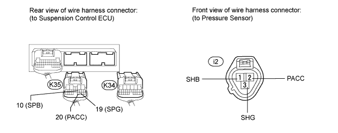
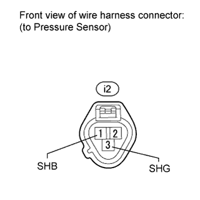
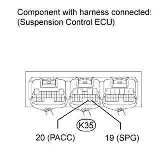

DTC C1718 Pressure Sensor Circuit Malfunction |
| DTC Code | Detecting Condition | Trouble Area |
| C1718 | When one of the following conditions is met:
|
|

| 1.CHECK HARNESS AND CONNECTOR (PRESSURE SENSOR - SUSPENSION CONTROL ECU) |
Disconnect the i2 pressure sensor connector.
Disconnect the K34 and K35 ECU connectors.

Measure the resistance according to the value(s) in the table below.
| Tester Connection | Condition | Specified Condition |
| K35-10 (SPB) - i2-1 (SHB) | Always | Below 1 Ω |
| K35-19 (SPG) - i2-3 (SHG) | Always | Below 1 Ω |
| K35-20 (PACC) - i2-2 (PACC) | Always | Below 1 Ω |
| K35-10 (SPB) - Body ground | Always | 10 kΩ or higher |
| K35-19 (SPG) - Body ground | Always | 10 kΩ or higher |
| K35-20 (PACC) - Body ground | Always | 10 kΩ or higher |
|
| ||||
| OK | |
| 2.CHECK SUSPENSION CONTROL ECU |
 |
Connect the K34 and K35 suspension control ECU connectors.
Disconnect the i2 pressure sensor connector.
Measure the voltage according to the value(s) in the table below.
| Tester Connection | Switch Condition | Specified Condition |
| i2-1 (SHB) - i2-3 (SHG) | Engine switch on (IG) | 4.75 to 5.25 V |
|
| ||||
| OK | |
| 3.CHECK PRESSURE SENSOR |
Connect the K34 and K35 suspension control ECU connectors.
Connect the i2 pressure sensor connector.
 |
Start the engine and push the up button of the height control switch to activate height control.
Measure the voltage according to the value(s) in the table below.
| Tester Connection | Condition | Specified Condition |
| K35-20 (PACC) - K35-19 (SPG) | While height control is operating. | 1.48 to 2.54 V |
|
| ||||
| OK | ||
| ||